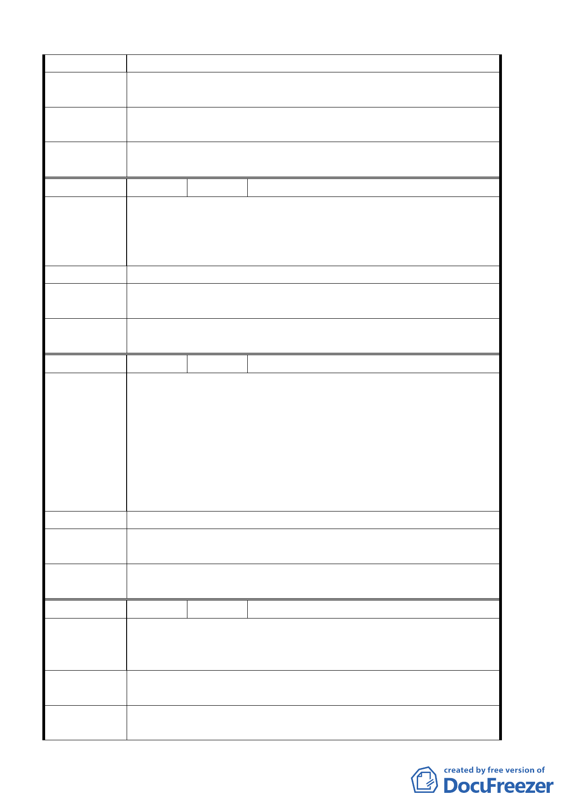

一處安全又順暢的道路空間。
建議辦法
建請台北藝大校門口前學園路至光武技術學院間道路拓寬為
12 公尺以上，並儘速增闢該路段兩旁『行人步道』。
專 案 小 組 93.6.10 專案小組第五次審查會議：建議以既有道路側設置人
結 論 行道及輔以禁止停車之交通管制處理。
委員會議
決議
同意依專案小組審查結論辦理。
編 號 １０ 陳情人 陳德郎
建議位置：北投區豐年段四小段五二二地號（北投區大度路三
陳情理由
段二九六巷）
建議理由：原為大度路三段 296 巷左線現改為立功街 79 巷請打
通巷道可至捷運關渡站，上、下班方便。
建 議 辦 法 請打通立功街 79 巷
專案小組 93.6.10 專案小組第五次審查會議：該地區未來將留設四公尺
結 論 無遮簷人行道。
委員會議
決議
同意依專案小組審查結論辦理。
編 號 １１ 陳情人 志仁家商學校代表人李忠和
建議位置：（關五）北投區桃源段五小段 790 地號（北投區一德
街 75 號）
建議理由：依公告圖 1/1000 第五號圖內，文教區（志仁家商）
陳情理由
與北側住二分界線似有筆誤，該位置土地座落北投區桃源段五
小段 790 地號（重測前為嘎嘮別小段 859-4 地號）面積一○三．
四七平方公尺，所有權為本校所有，地上為一層鋼筋混擬土建
造為學生洗手間（廁所）之用。鈞府 80 年 4 月 30 日公告之私
立學校都市計畫通盤檢討資料中已同意變更為文教區在案。
建 議 辦 法 請修正 1/1000 公告圖中該土地為文教區。
專 案 小 組 93.4.29 專案小組第四次審查會議：請都市發展局查明地籍謄
結 論 本後，若有必要予以配合修正地號。
委員會議
決議
同意依專案小組審查結論辦理。
編 號 １２ 陳情人 一德里里長陳進雄
建議位置：北投桃二段
陳 情 理 由 建議理由：中央北路四段沿線住二部份為老舊住宅已是數十幾
年之老舊建築。
建議辦法
建請放寬為住三特並降低限制為 1000 平方公尺，相關單位至實
地瞭解現況。
專 案 小 組 93.4.29 專案小組第四次審查會議：同意發展局提案中央北路
結 論 四段沿線第一街廓變更為住三（特），退縮規定、高度限制、建
第 26 頁，共 49 頁